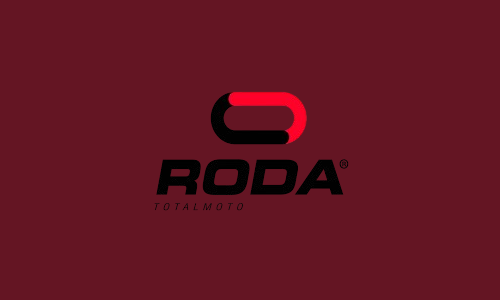
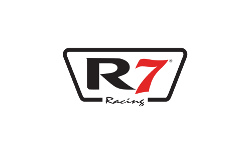
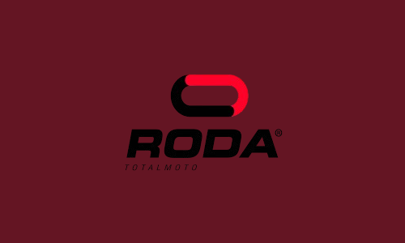
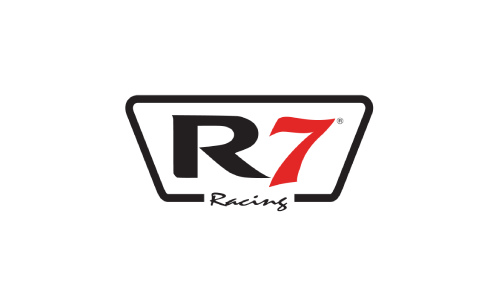

En BDN, encontrarás una amplia gama de refacciones originales y de alta calidad para motocicletas y bicicletas, contamos con todo lo que necesitas para mantener tu vehículo en óptimas condiciones. Nuestro compromiso es ofrecerte productos duraderos y un servicio excepcional.
Quienes somos
Empresa orgullosamente Duranguense Fundada en 1986 con el nombre de Bicicletas Don Nabor, el 13 de Marzo de 1990 cambia su nombre a Grupo Empresarial NAHEL, S.A. de C.V. y cuya naturaleza es la fabricación y la comercialización de bicicletas y refacciones. Contamos con sucursales y concesionarios en diversos estados de la República Mexicana.
La historia NAHEL comienza desde que DON NABOR HERRERA LUGO era empleado de la tienda de bicicletas
“La Nacional”, al pensionarse instala un puesto de revistas y refrescos.
Comienza a vender llantas, cadenas para bicicletas y refacciones en general, y de esta forma
comienza este negocio familiar que es hasta hoy en día, con sucursales que alcanzan a cubrir toda la república mexicana.
Nuestras Marcas
 



Sucursales
Horarios: Lunes a Viernes de 8:00 a 19:00, Sabado de 8:00 a 18:00 y Domingo de 9:00 a 15:00.
BDN Rio Verde 040
Blvd. Carlos J. Barrios Colonia Zona Centro, Rio Verde, SLP
Altamira 038
Blvd. Allende #711 Colonia Sector 3, Altamira, Tamps.
Curva Texas 033
Carretera Tampico-Mante Colonia Las Americas, Tampico, Tamps.
Ciudad Madero 037
Calle Bolivia Colonia Zona Centro, Cd. Madero, Tamps.
Zona Norte Tampico 036
Carretera Tampico-Mante Colonia Nuevo Congreso, Tampico, Tamps.
Tampico Mercado 034
Calle Heroes de Cañonero Colonia Zona Centro, Tampico, Tamps.
Unidad Deportiva de Cd. Madero 039
Avenida Tamaulipas Colonia Ignacio Zaragoza, Cd. Madero, Tamps.
Centro Tampico 032
Calle Francisco I. Madero Colonia Zona Centro, Tampico, Tamps.
*Las sucursales 034, 036 y 039 no abren los domingos.